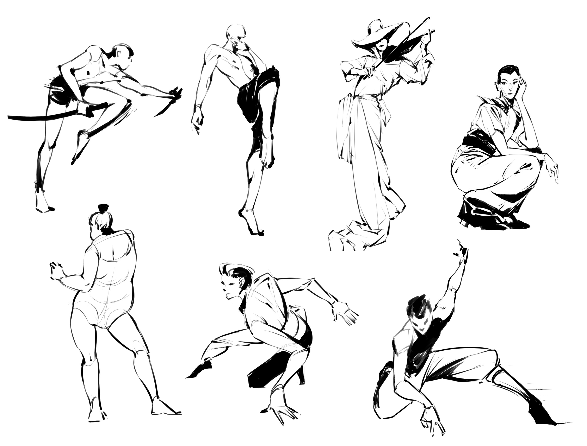

Concept art is a field with a wide array of career opportunities. Many artists work within game development studios, animation companies, or film production houses, contributing to the visual design of characters, environments, and props. Freelance work is also common, with artists taking on contract projects from independent developers, smaller studios, or even large corporations. Whether working in-house or as a freelancer, the demand for concept art in entertainment industries continues to grow.
Building a career in concept art often comes down to networking and establishing strong relationships within the industry. Attending conferences, art conventions, and online communities can help you connect with like-minded artists, potential clients, or employers. Networking also provides opportunities to collaborate on projects or gain insights from more experienced professionals. Maintaining an active online presence through social media on applications like ArtStation and Instagram, or other art-sharing platforms is also key to getting noticed.
The concept art field is highly competitive, so continuously improving your skills is essential. Regular practice, experimentation with new tools, and learning from feedback will help you stay ahead. Additionally, keeping up with industry trends and advancements in software and techniques can make you more adaptable and marketable to employers and clients alike.
 Gesture drawings by Xiaoren Chen.